Day 30 額外實作｜核心 Game Day 端到端量測
對應文章：Day 30｜最終驗收：用 Game Day 檢查安全邊界、服務切換與資料復原
本文件接續 Day 30｜最終驗收：用 Game Day 檢查安全邊界、服務切換與資料復原，執行正文新增證據的三項核心測試：
C03／F10：目前持有三組 VIP 的 Proxy VM 突然停止。D02／F11：目前 PostgreSQL Primary VM 突然停止。A06／F12：client01 從同一個 VLAN 直接連向 app01 TCP 22。
完整正向、負向與元件回歸保留在正式 Runbook 的 Scenario A～I。本文件提供固定 Probe、量測計算、交易核對與實際驗證畫面，讓讀者重現正文的核心結果。
原始畫面保留測試當時使用的 day30-f11、day30-f12 Run ID；這兩個值只用來識別該次 Log。現行文件依驗收矩陣使用 C03、D02 與 A06，新一輪執行時會建立新的 Run ID，不影響既有量測結果。
[!CAUTION] 本文件會停止 Proxy VM 與 PostgreSQL Primary VM。只在已核准的 Lab 時段執行，每次只注入一項故障。保留 L0、PVE Console 與 OPNsense Console；目前 Primary、VIP Owner 或回復路徑不明時停止操作。
本次驗收會取得哪些證據
| 證據群組 | 內容 | 用途 |
|---|---|---|
| C1 | 執行前健康基準 | 證明故障前環境健康 |
| C2 | 三條 Probe 連續成功 | 固定使用者觀察方式 |
| C3 | C03／F10 故障注入與 VM 狀態 |
確定 Proxy 故障起點 |
| C4 | C03／F10 三條 Probe 的量測摘要與 VIP 接手 |
判讀 Proxy VM 故障結果 |
| C5 | C03／F10 回復後完整穩態 |
證明環境可以進入下一項測試 |
| D1 | D02／F11 前的 Primary、Timeline 與 VMID |
確定資料庫故障目標 |
| D2 | D02／F11 故障注入、新 Primary 與 Probe 恢復 |
判讀控制面與使用者路徑 |
| D3 | 已確認交易核對 | 判讀本次 Failover 是否遺失已確認交易 |
| D4 | 舊 Primary 回歸與服務元件穩態 | 判讀備援能力修復 |
| D5 | D02／A03 告警生命週期補測 |
量測 Pending、Firing 與告警清除 |
| N1 | A06／F12 同 VLAN 直接 SSH |
保存目前管理路徑的既有缺口 |
這些畫面分別支持故障前基準、使用者影響、控制面接手、資料核對、告警生命週期與已知安全缺口。
1. 填寫本次演練資料
操作位置：管理電腦。
執行前先記錄：
| 欄位 | 本次填寫 |
|---|---|
| Exercise ID | |
| 日期與核准時段 | |
| 操作者／回復負責人 | |
| Proxy VM RTO | 未核准時填「未設定」 |
| Primary VM RTO | 未核准時填「未設定」 |
| Primary Failover RPO | 未核准時填「未設定」 |
| 證據保存位置 |
測得的秒數是實際能力。只有事先填入並核准的 RTO／RPO，才能用於 PASS／FAIL；未設定的項目保留為能力基線。
2. 確認開始前健康基準
2.0 確認跨主機時間可以比較
操作位置：client01、承載目標 VM 的 PVE 節點、兩台 Proxy、三台 PostgreSQL 節點與 monitor01。
hostnamectl --static 2>/dev/null || hostname
date --iso-8601=ns
timedatectl show -p NTPSynchronized --value
chronyc tracking 2>/dev/null | \
grep -E 'Reference ID|System time|Leap status' || true
跨主機的 fault_to_stable_recovery 只有在時鐘同步時才具備量測意義。某台主機無法證明同步時，仍可使用 client01 同一份 Log 計算 first_fail_to_stable_recovery，跨主機故障起點到恢復時間則標示為證據不足。
2.1 PVE 與 Ceph
操作位置：任一 PVE 叢集節點。
hostname
date --iso-8601=ns
pvecm status
ceph -s
ha-manager status
必須確認 PVE 為 3/3 Quorate、Ceph 為 HEALTH_OK 且 PG 全部 active+clean。
2.2 PostgreSQL 與 etcd
操作位置：任一 PostgreSQL 節點。
hostnamectl --static
date --iso-8601=ns
sudo -u postgres patronictl \
-c /etc/patroni/config.yml \
list -e
sudo -u etcd env \
ETCDCTL_API=3 \
ETCDCTL_ENDPOINTS='https://10.77.30.11:2379,https://10.77.30.12:2379,https://10.77.30.13:2379' \
ETCDCTL_CACERT='/etc/etcd/tls/ca.crt' \
ETCDCTL_CERT='/etc/etcd/tls/node.crt' \
ETCDCTL_KEY='/etc/etcd/tls/node.key' \
etcdctl endpoint health --cluster
必須看到一台 Leader、兩台 Replica / streaming，而且 etcd 三個 Endpoint 都為 Healthy。
2.3 Proxy、VIP 與監控
操作位置：proxy01、proxy02 各執行一次。
hostnamectl --static
date --iso-8601=ns
systemctl is-active nginx haproxy keepalived
for vip in 10.77.20.10 10.77.20.11 10.77.20.12; do
if ip -4 -o address show dev eth0 | grep -Fq " ${vip}/24 "; then
printf '%s owner=%s\n' "$vip" "$(hostnamectl --static)"
else
printf '%s owner=other-node\n' "$vip"
fi
done
操作位置：monitor01。
hostnamectl --static
date --iso-8601=ns
systemctl is-active \
prometheus \
prometheus-alertmanager \
prometheus-blackbox-exporter \
grafana-server
curl -fsS http://127.0.0.1:9090/-/ready
curl -fsS http://127.0.0.1:9093/-/ready
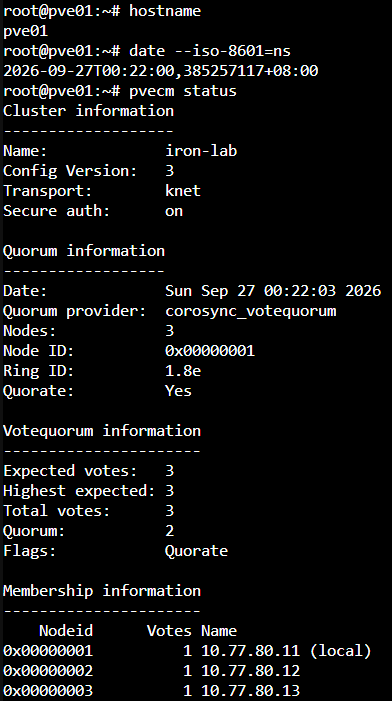
圖（一） PVE 三個節點均在成員清單且叢集維持 Quorate
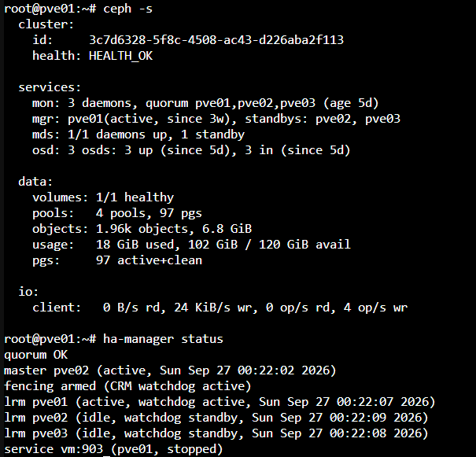
圖（二） Ceph 為 HEALTH_OK 且 HA 服務處於 Started
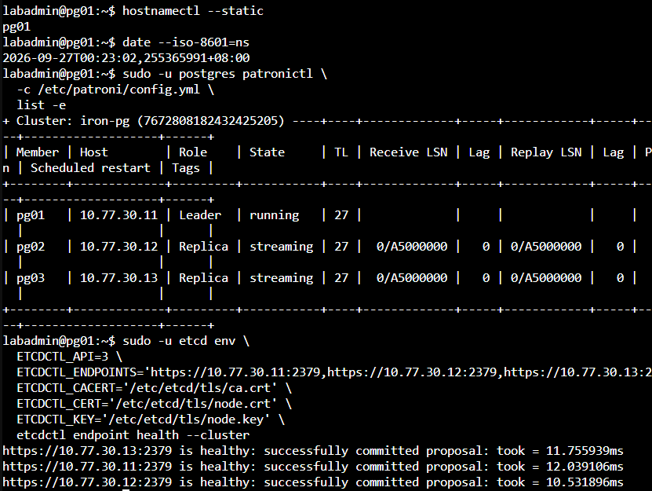
圖（三） Patroni 為一台 Leader 兩台 Replica 且 etcd 三個 Endpoint 健康
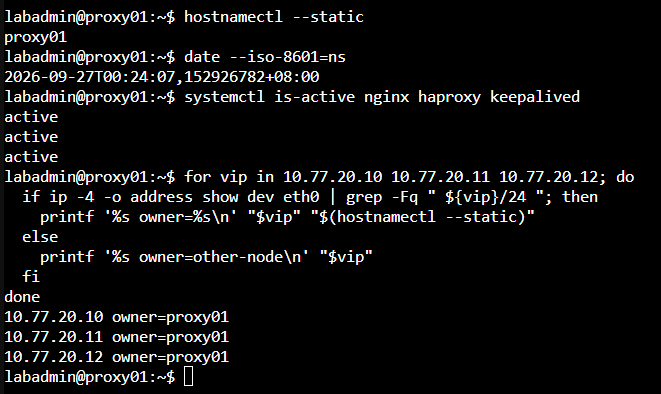
圖（四） proxy01 持有三組 VIP
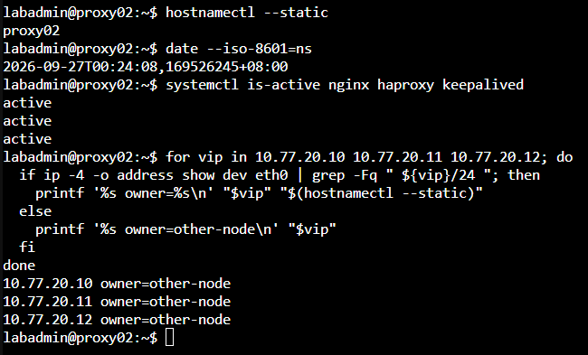
圖（五） proxy02 未持有 VIP
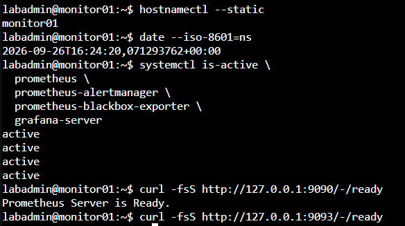
圖（六） monitor01 的監控服務均為 active
3. 建立固定 Probe 與量測工具
3.1 建立測試資料表
操作位置：目前 PostgreSQL Leader。
hostnamectl --static
sudo -u postgres psql \
-X -d appdb -v ON_ERROR_STOP=1 -P pager=off <<'SQL'
CREATE TABLE IF NOT EXISTS app.day30_failover_probe (
run_id text NOT NULL,
client_seq bigint NOT NULL,
committed_at timestamptz NOT NULL DEFAULT clock_timestamp(),
PRIMARY KEY (run_id, client_seq)
);
ALTER TABLE app.day30_failover_probe OWNER TO app_owner;
GRANT INSERT, SELECT ON app.day30_failover_probe TO app_rw;
GRANT SELECT ON app.day30_failover_probe TO app_ro;
SQL
sudo -u postgres psql \
-X -d appdb -P pager=off \
-c '\d+ app.day30_failover_probe'
這張表只保存本次測試的 Run ID、用戶端序號與 Commit 時間。run_id 讓 C03、D02 與後續複測互不混淆。
3.2 建立 Probe Script
操作位置：client01。
開始前確認 Root CA 與 .pgpass 已依正式 Runbook 建立；畫面不顯示 .pgpass 內容：
hostnamectl --static
date --iso-8601=ns
sudo test -r /etc/iron-app/pg-ca.crt
printf 'pg_ca_readable_rc=%s\n' "$?"
stat -c '%U %G %a %n' "$HOME/.pgpass"
建立程式：
sudo install -d -m 0755 /opt/iron-test
sudo install -d -m 0750 -o labadmin -g labadmin /var/log/iron-test
sudo tee /opt/iron-test/day30-probe.sh >/dev/null <<'SCRIPT'
#!/bin/bash
set -u
probe_type="${1:?usage: day30-probe.sh web|rw|ro}"
run_id="${DAY30_RUN_ID:?DAY30_RUN_ID is required}"
public_host="${DAY30_PUBLIC_HOST:?DAY30_PUBLIC_HOST is required}"
seq=0
while true; do
seq=$((seq + 1))
epoch="$(date +%s.%N)"
iso="$(date --iso-8601=ns)"
output=''
rc=0
case "$probe_type" in
web)
if output="$(curl -fsS --connect-timeout 3 --max-time 5 \
"https://${public_host}/health?day30=${run_id}-${seq}" 2>&1)"; then
rc=0
else
rc=$?
fi
;;
rw)
if output="$(PGOPTIONS='-c statement_timeout=3000' \
psql \
'host=db-rw.lab.home port=5432 dbname=appdb user=app_rw sslmode=verify-full sslrootcert=/etc/iron-app/pg-ca.crt connect_timeout=3' \
-X -qAt -F ',' -v ON_ERROR_STOP=1 \
-c "INSERT INTO app.day30_failover_probe(run_id, client_seq)
VALUES ('$run_id', $seq)
RETURNING client_seq,
extract(epoch FROM committed_at),
inet_server_addr();" 2>&1)"; then
rc=0
else
rc=$?
fi
;;
ro)
if output="$(PGOPTIONS='-c statement_timeout=3000' \
psql \
'host=db-ro.lab.home port=5432 dbname=appdb user=app_ro sslmode=verify-full sslrootcert=/etc/iron-app/pg-ca.crt connect_timeout=3' \
-X -qAt -F ',' -v ON_ERROR_STOP=1 \
-c 'SELECT pg_is_in_recovery(),inet_server_addr(),extract(epoch FROM clock_timestamp());' \
2>&1)"; then
rc=0
else
rc=$?
fi
;;
*)
echo 'usage: day30-probe.sh web|rw|ro' >&2
exit 2
;;
esac
output="$(printf '%s' "$output" | tr '\n|' ' ')"
if [ "$rc" -eq 0 ]; then
status='OK'
else
status='FAIL'
fi
printf '%s|%s|%s|%s|rc=%s seq=%s %s\n' \
"$epoch" "$iso" "$probe_type" "$status" "$rc" "$seq" "$output"
sleep 1
done
SCRIPT
sudo chown root:root /opt/iron-test/day30-probe.sh
sudo chmod 755 /opt/iron-test/day30-probe.sh
sudo bash -n /opt/iron-test/day30-probe.sh
printf 'probe_syntax_rc=%s\n' "$?"
3.3 建立量測摘要程式
操作位置：client01。
sudo tee /opt/iron-test/day30-summarize.awk >/dev/null <<'AWK'
BEGIN {
FS="|"
first_fail=""
stable=""
consecutive_ok=0
total=0
ok_count=0
fail_count=0
}
($1 + 0) >= fault {
total++
if ($4 == "FAIL") {
fail_count++
if (first_fail == "") {
first_fail=$1 + 0
}
consecutive_ok=0
next
}
if ($4 == "OK") {
ok_count++
if (first_fail != "") {
consecutive_ok++
if (consecutive_ok == 1) {
candidate=$1 + 0
}
if (consecutive_ok >= 3 && stable == "") {
stable=candidate
}
}
}
}
END {
printf "samples_after_fault=%d ok=%d fail=%d\n", total, ok_count, fail_count
if (first_fail == "") {
print "result=no_observed_interruption"
} else if (stable == "") {
printf "result=insufficient_recovery_evidence first_fail=%.9f\n", first_fail
} else {
printf "first_fail_epoch=%.9f\n", first_fail
printf "stable_recovery_epoch=%.9f\n", stable
printf "fault_to_stable_recovery=%.3f_seconds\n", stable-fault
printf "first_fail_to_stable_recovery=%.3f_seconds\n", stable-first_fail
}
}
AWK
sudo chmod 644 /opt/iron-test/day30-summarize.awk
此程式以故障後第一筆失敗為中斷起點，以連續三次成功中的第一筆為穩定恢復點。整段沒有失敗時會輸出 result=no_observed_interruption，不會虛構中斷秒數。
3.4 啟動一組測試 Probe
操作位置：client01。先執行 C03，完成回復後再以新 Run ID 執行 D02。
把公開 Hostname 換成 Day 27 實際使用的名稱：
export DAY30_PUBLIC_HOST='app.example.com'
export DAY30_RUN_ID="day30-c03-$(date +%Y%m%dT%H%M%S%z)"
export DAY30_LOG_DIR="/var/log/iron-test/${DAY30_RUN_ID}"
install -d -m 0750 "$DAY30_LOG_DIR"
nohup env \
DAY30_PUBLIC_HOST="$DAY30_PUBLIC_HOST" \
DAY30_RUN_ID="$DAY30_RUN_ID" \
/opt/iron-test/day30-probe.sh web \
>"$DAY30_LOG_DIR/web.log" 2>&1 &
echo $! >"$DAY30_LOG_DIR/web.pid"
nohup env \
DAY30_PUBLIC_HOST="$DAY30_PUBLIC_HOST" \
DAY30_RUN_ID="$DAY30_RUN_ID" \
/opt/iron-test/day30-probe.sh rw \
>"$DAY30_LOG_DIR/rw.log" 2>&1 &
echo $! >"$DAY30_LOG_DIR/rw.pid"
nohup env \
DAY30_PUBLIC_HOST="$DAY30_PUBLIC_HOST" \
DAY30_RUN_ID="$DAY30_RUN_ID" \
/opt/iron-test/day30-probe.sh ro \
>"$DAY30_LOG_DIR/ro.log" 2>&1 &
echo $! >"$DAY30_LOG_DIR/ro.pid"
printf 'DAY30_RUN_ID=%s\nDAY30_LOG_DIR=%s\n' \
"$DAY30_RUN_ID" "$DAY30_LOG_DIR" | \
tee "$DAY30_LOG_DIR/run.env"
printf 'export DAY30_PUBLIC_HOST=%q\nexport DAY30_RUN_ID=%q\nexport DAY30_LOG_DIR=%q\n' \
"$DAY30_PUBLIC_HOST" "$DAY30_RUN_ID" "$DAY30_LOG_DIR" | \
tee /var/tmp/day30-current.env
等待至少 30 秒，再確認三條路徑都持續成功：
hostnamectl --static
date --iso-8601=ns
printf 'run_id=%s\n' "$DAY30_RUN_ID"
for probe in web rw ro; do
printf '%s\n' "--- ${probe} latest samples ---"
tail -n 5 "$DAY30_LOG_DIR/${probe}.log"
done
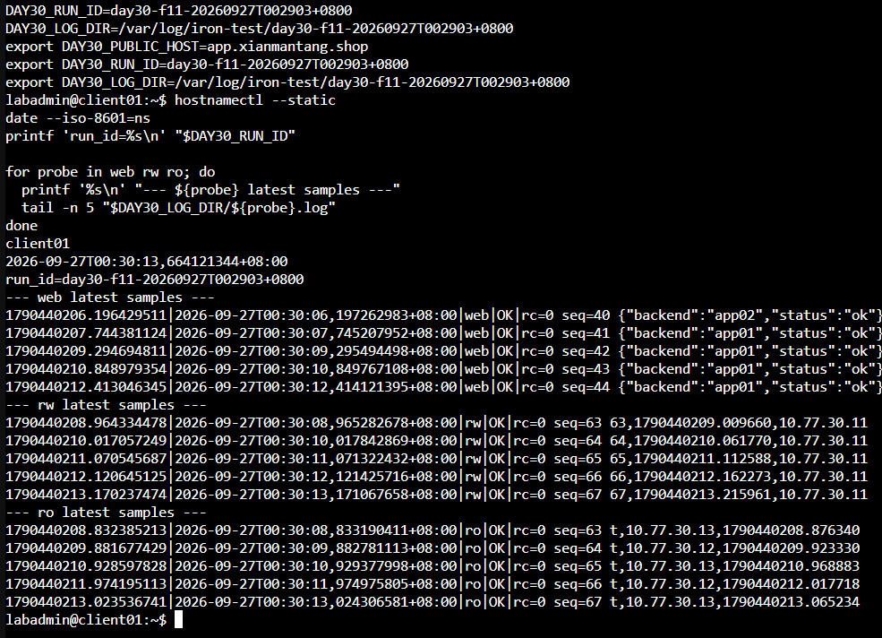
圖（七） C03 故障前 Web DB-RW 與 DB-RO Probe 連續成功
4. C03：Proxy VM 突然停止
4.1 確認 VIP Owner 與 VMID
操作位置：proxy01、proxy02。
hostnamectl --static
date --iso-8601=ns
for vip in 10.77.20.10 10.77.20.11 10.77.20.12; do
if ip -4 -o address show dev eth0 | grep -Fq " ${vip}/24 "; then
printf '%s owner=%s\n' "$vip" "$(hostnamectl --static)"
fi
done
三組 VIP 必須集中於同一台 Proxy 才執行本次測試。VMID 對照如下：
proxy01 → VMID 201
proxy02 → VMID 202
4.2 注入 Proxy VM 故障
操作位置：承載目標 Proxy VM 的 PVE 節點 Shell。
先將 VMID 改成目前持有三組 VIP 的節點，再執行：
TARGET_PROXY_VMID='201'
FAULT_EPOCH="$(date +%s.%N)"
FAULT_TIME="$(date --iso-8601=ns)"
printf 'scenario=C03\nfault_time=%s\nfault_epoch=%s\ntarget_vmid=%s\n' \
"$FAULT_TIME" "$FAULT_EPOCH" "$TARGET_PROXY_VMID" | \
tee /root/day30-c03-fault.env
qm status "$TARGET_PROXY_VMID"
qm stop "$TARGET_PROXY_VMID"
qm status "$TARGET_PROXY_VMID"
4.3 確認接手並恢復原 VM
操作位置：仍在線的 Proxy。
hostnamectl --static
date --iso-8601=ns
systemctl is-active nginx haproxy keepalived
for vip in 10.77.20.10 10.77.20.11 10.77.20.12; do
ip -4 -o address show dev eth0 | grep -F " ${vip}/24 "
done
三組 VIP 都必須由存活 Proxy 持有。先保存 A02 告警證據，再回到 PVE 節點啟動原 VM。
保持原 Proxy VM 停止，在 monitor01 重複查詢，直到停止中的 Proxy 對應 InstanceDown 進入 Firing 並出現在 Alertmanager：
curl -fsS http://127.0.0.1:9090/api/v1/alerts | \
jq -r '.data.alerts[]? |
select(.labels.alertname == "InstanceDown") |
[.labels.alertname,
.labels.instance,
.state,
.activeAt] | @tsv'
amtool alert query \
--alertmanager.url=http://127.0.0.1:9093
規則設有 for: 2m，尚未進入 Firing 前不要啟動原 VM。只把 Instance 與停止中的 Proxy 相符的告警記為 A02。保存證據後，回到 PVE 節點啟動原 VM：
TARGET_PROXY_VMID='201'
date --iso-8601=ns
qm start "$TARGET_PROXY_VMID"
qm status "$TARGET_PROXY_VMID"
等待原 Proxy 開機後，在兩台 Proxy 各執行：
hostnamectl --static
systemctl is-active nginx haproxy keepalived
ip -4 -o address show dev eth0 | \
grep -E '10\.77\.20\.(10|11|12)/24' || true
每個 VIP 在兩台輸出中只能出現一次。
4.4 計算 C03 使用者中斷
操作位置：client01。把 FAULT_EPOCH 換成 C3 畫面的實際值。
source /var/tmp/day30-current.env
FAULT_EPOCH='1790440298.586887014'
hostnamectl --static
date --iso-8601=ns
printf 'run_id=%s\nfault_epoch=%s\n' \
"$DAY30_RUN_ID" "$FAULT_EPOCH"
for probe in web rw ro; do
printf '%s\n' "=== ${probe} ==="
awk -v fault="$FAULT_EPOCH" \
-f /opt/iron-test/day30-summarize.awk \
"$DAY30_LOG_DIR/${probe}.log"
done
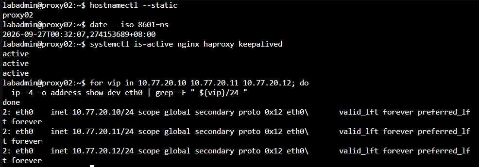
圖（八） proxy01 停止後 proxy02 接手三組 VIP
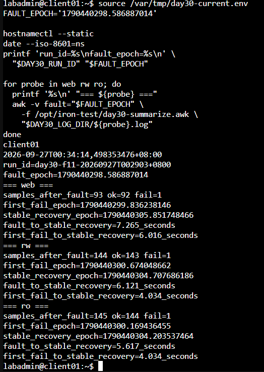
圖（九） C03 三條 Probe 的中斷與穩定恢復摘要
4.5 停止 C03 Probe
操作位置：client01。
source /var/tmp/day30-current.env
for pid_file in "$DAY30_LOG_DIR"/*.pid; do
kill "$(cat "$pid_file")" 2>/dev/null || true
done
sleep 2
pgrep -af '/opt/iron-test/day30-probe.sh' || \
echo 'C03 probes stopped'
tail -n 3 "$DAY30_LOG_DIR/web.log"
tail -n 3 "$DAY30_LOG_DIR/rw.log"
tail -n 3 "$DAY30_LOG_DIR/ro.log"
在 monitor01 查詢本次 Alert：
hostnamectl --static
date --iso-8601=ns
curl -fsS http://127.0.0.1:9090/api/v1/alerts | \
jq -r '.data.alerts[]? |
[.labels.alertname,
.labels.instance,
.state,
.activeAt] | @tsv'
amtool alert query \
--alertmanager.url=http://127.0.0.1:9093
確認 Proxy 故障對應的 InstanceDown 已觸發，且 Proxy 回復後相關 Target 與 Alert 已恢復；只採用名稱、Instance 與時間能對應本次故障的告警作為 A02 證據。
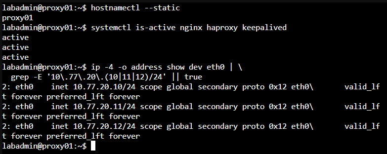
圖（十） proxy01 回歸後重新持有三組 VIP
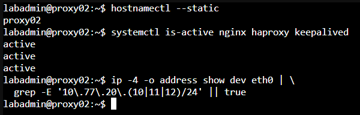
圖（十一） proxy02 回到不持有 VIP 的狀態
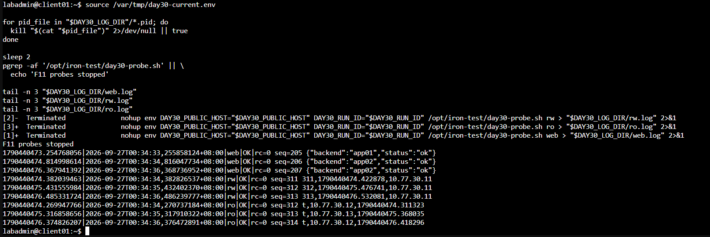
圖（十二） C03 結束前三條 Probe 持續成功
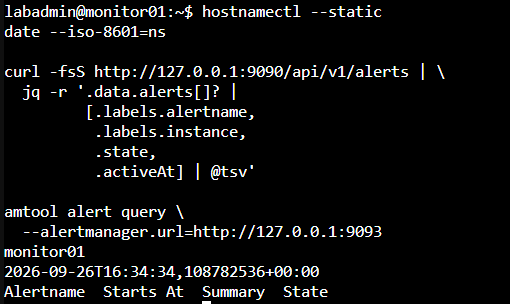
圖（十三） C03 回復後 Prometheus 與 Alertmanager 無殘留告警
5. D02：PostgreSQL Primary VM 突然停止
5.1 建立新的 Probe Run
操作位置：client01。
把 app.example.com 換成 Day 27 實際使用的公開 Hostname。
export DAY30_PUBLIC_HOST='app.example.com'
export DAY30_RUN_ID="day30-d02-$(date +%Y%m%dT%H%M%S%z)"
export DAY30_LOG_DIR="/var/log/iron-test/${DAY30_RUN_ID}"
install -d -m 0750 "$DAY30_LOG_DIR"
for probe in web rw ro; do
nohup env \
DAY30_PUBLIC_HOST="$DAY30_PUBLIC_HOST" \
DAY30_RUN_ID="$DAY30_RUN_ID" \
/opt/iron-test/day30-probe.sh "$probe" \
>"$DAY30_LOG_DIR/${probe}.log" 2>&1 &
echo $! >"$DAY30_LOG_DIR/${probe}.pid"
done
printf 'DAY30_RUN_ID=%s\nDAY30_LOG_DIR=%s\n' \
"$DAY30_RUN_ID" "$DAY30_LOG_DIR" | \
tee "$DAY30_LOG_DIR/run.env"
printf 'export DAY30_PUBLIC_HOST=%q\nexport DAY30_RUN_ID=%q\nexport DAY30_LOG_DIR=%q\n' \
"$DAY30_PUBLIC_HOST" "$DAY30_RUN_ID" "$DAY30_LOG_DIR" | \
tee /var/tmp/day30-current.env
sleep 30
for probe in web rw ro; do
printf '%s\n' "--- ${probe} latest samples ---"
tail -n 3 "$DAY30_LOG_DIR/${probe}.log"
done
5.2 確認 Primary、Timeline 與 VMID
操作位置：任一 PostgreSQL 節點。
hostnamectl --static
date --iso-8601=ns
sudo -u postgres patronictl \
-c /etc/patroni/config.yml \
list -e
VMID 對照如下：
pg01 → VMID 221
pg02 → VMID 222
pg03 → VMID 223
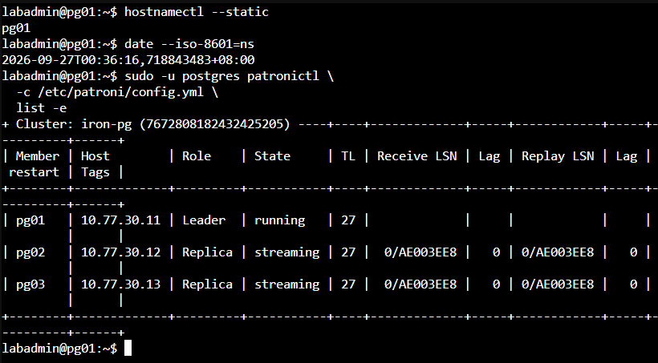
圖（十四） D02 前 pg01 為 Leader 且兩台 Replica 持續串流
5.3 注入 Primary VM 故障
操作位置：承載目前 Primary VM 的 PVE 節點 Shell。
將 VMID 改成 D1 的目前 Leader：
TARGET_PRIMARY_VMID='221'
FAULT_EPOCH="$(date +%s.%N)"
FAULT_TIME="$(date --iso-8601=ns)"
printf 'scenario=D02\nfault_time=%s\nfault_epoch=%s\ntarget_vmid=%s\n' \
"$FAULT_TIME" "$FAULT_EPOCH" "$TARGET_PRIMARY_VMID" | \
tee /root/day30-d02-fault.env
qm status "$TARGET_PRIMARY_VMID"
qm stop "$TARGET_PRIMARY_VMID"
qm status "$TARGET_PRIMARY_VMID"
操作位置：任一存活 PostgreSQL 節點。
watch -n 1 \
'sudo -u postgres patronictl -c /etc/patroni/config.yml list -e'
看到新 Leader 後按 Ctrl+C。在任一 Proxy 確認 HAProxy：
hostnamectl --static
date --iso-8601=ns
echo 'show stat' | \
sudo socat stdio /run/haproxy/admin.sock | \
grep -E '^pg_primary,(pg01|pg02|pg03),'
只有新 Leader 在 pg_primary Backend 應為 UP。
此時在 monitor01 保存仍離線的 PostgreSQL Instance、Prometheus Alert 與 Alertmanager 狀態：
hostnamectl --static
date --iso-8601=ns
curl -fsS http://127.0.0.1:9090/api/v1/alerts | \
jq -r '.data.alerts[]? |
[.labels.alertname,
.labels.instance,
.state,
.activeAt] | @tsv'
amtool alert query \
--alertmanager.url=http://127.0.0.1:9093
保持原 Primary VM 停止並重複查詢，直到對應的 InstanceDown 進入 Firing 並出現在 Alertmanager。只將名稱、Instance 與時間能對應本次 Primary VM 故障的項目列為 A03；尚未進入 Firing 前不要啟動原 VM。
5.4 計算 D02 中斷並核對交易
操作位置：client01。把 FAULT_EPOCH 換成故障注入畫面的實際值。
source /var/tmp/day30-current.env
FAULT_EPOCH='請貼上D02的fault_epoch'
hostnamectl --static
date --iso-8601=ns
printf 'run_id=%s\nfault_epoch=%s\n' \
"$DAY30_RUN_ID" "$FAULT_EPOCH"
for probe in web rw ro; do
printf '%s\n' "=== ${probe} ==="
awk -v fault="$FAULT_EPOCH" \
-f /opt/iron-test/day30-summarize.awk \
"$DAY30_LOG_DIR/${probe}.log"
done
接著核對所有 DB-RW Probe 已收到成功回覆的序號仍存在於新 Primary：
awk -F'|' '
$3 == "rw" && $4 == "OK" {
if (match($5, /seq=[0-9]+/)) {
value=substr($5, RSTART + 4, RLENGTH - 4)
print value
}
}
' "$DAY30_LOG_DIR/rw.log" | \
sort -u >"$DAY30_LOG_DIR/acknowledged-seq.txt"
psql \
'host=db-rw.lab.home port=5432 dbname=appdb user=app_rw sslmode=verify-full sslrootcert=/etc/iron-app/pg-ca.crt connect_timeout=3' \
-X -qAt -v ON_ERROR_STOP=1 \
-c "SELECT client_seq
FROM app.day30_failover_probe
WHERE run_id = '$DAY30_RUN_ID'
ORDER BY client_seq;" | \
sort -u >"$DAY30_LOG_DIR/database-seq.txt"
comm -23 \
"$DAY30_LOG_DIR/acknowledged-seq.txt" \
"$DAY30_LOG_DIR/database-seq.txt" \
>"$DAY30_LOG_DIR/missing-acknowledged-seq.txt"
ACK_COUNT="$(wc -l <"$DAY30_LOG_DIR/acknowledged-seq.txt")"
DB_COUNT="$(wc -l <"$DAY30_LOG_DIR/database-seq.txt")"
MISSING_ACK_COUNT="$(wc -l <"$DAY30_LOG_DIR/missing-acknowledged-seq.txt")"
printf 'run_id=%s\nacknowledged_rows=%s\ndatabase_rows=%s\nmissing_acknowledged_rows=%s\n' \
"$DAY30_RUN_ID" "$ACK_COUNT" "$DB_COUNT" "$MISSING_ACK_COUNT"
if [ "$MISSING_ACK_COUNT" -eq 0 ]; then
echo 'result=no_acknowledged_transaction_loss_observed'
else
echo 'result=acknowledged_transaction_loss_observed'
cat "$DAY30_LOG_DIR/missing-acknowledged-seq.txt"
fi
database_rows 可能大於 acknowledged_rows，代表部分交易已 Commit，但用戶端在連線中斷前沒有收到成功回覆；這些交易不屬於已確認交易遺失。missing_acknowledged_rows 才是本次核對的核心結果。
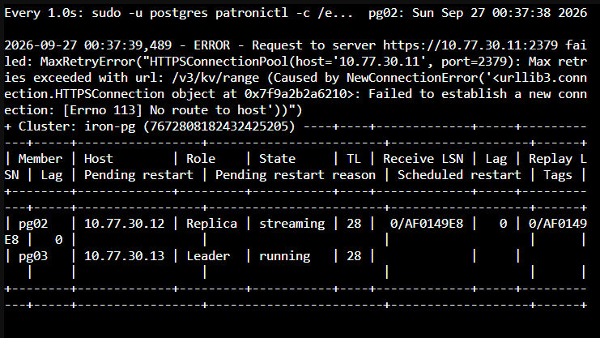
圖（十五） pg03 晉升為 Leader 且 pg02 持續串流
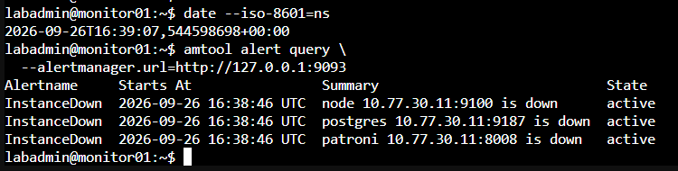
圖（十六） Primary VM 故障對應的 InstanceDown 告警進入 Firing
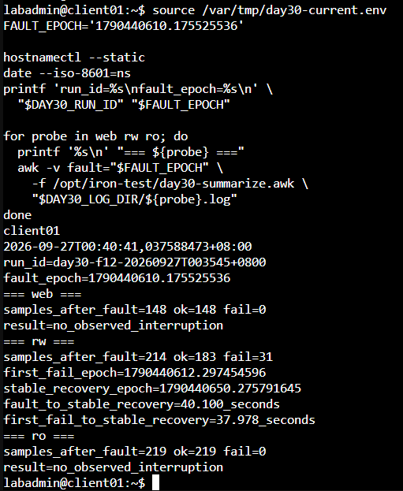
圖（十七） D02 三條 Probe 的中斷與穩定恢復摘要
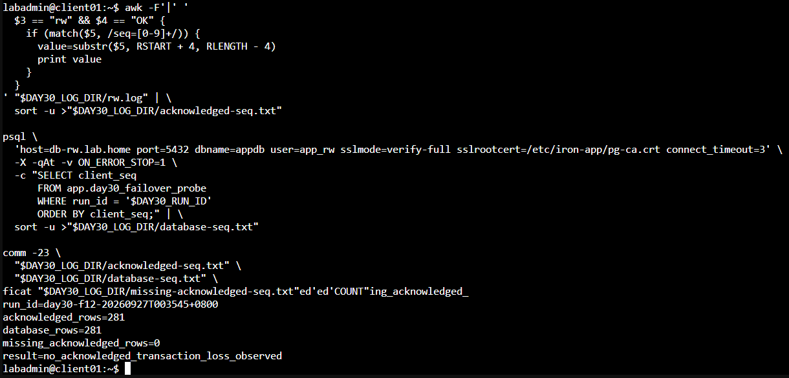
圖（十八） D02 已確認交易與新 Primary 可見資料核對
5.5 啟動舊 Primary 並確認回歸
操作位置：承載原 Primary 的 PVE 節點。
TARGET_PRIMARY_VMID='221'
date --iso-8601=ns
qm start "$TARGET_PRIMARY_VMID"
qm status "$TARGET_PRIMARY_VMID"
等待節點完成開機，再到任一 PostgreSQL 節點執行：
hostnamectl --static
date --iso-8601=ns
sudo -u postgres patronictl \
-c /etc/patroni/config.yml \
list -e
sudo -u etcd env \
ETCDCTL_API=3 \
ETCDCTL_ENDPOINTS='https://10.77.30.11:2379,https://10.77.30.12:2379,https://10.77.30.13:2379' \
ETCDCTL_CACERT='/etc/etcd/tls/ca.crt' \
ETCDCTL_CERT='/etc/etcd/tls/node.crt' \
ETCDCTL_KEY='/etc/etcd/tls/node.key' \
etcdctl endpoint health --cluster
預期結果為一台 Leader、兩台 Replica / streaming、三台 Timeline 相同、Lag 回到可接受範圍，etcd 3/3 Healthy。
停止 D02 Probe：
source /var/tmp/day30-current.env
for pid_file in "$DAY30_LOG_DIR"/*.pid; do
kill "$(cat "$pid_file")" 2>/dev/null || true
done
sleep 2
pgrep -af '/opt/iron-test/day30-probe.sh' || \
echo 'D02 probes stopped'
for probe in web rw ro; do
printf '%s\n' "--- ${probe} final samples ---"
tail -n 3 "$DAY30_LOG_DIR/${probe}.log"
done
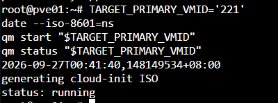
圖（十九） 從 PVE 重新啟動舊 Primary pg01
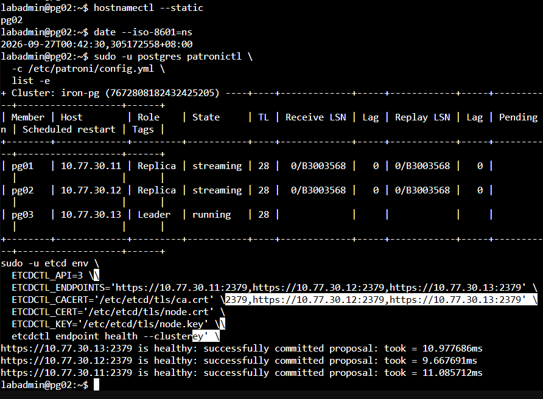
圖（二十） pg01 以 Replica 回歸且 etcd 三個 Endpoint 健康
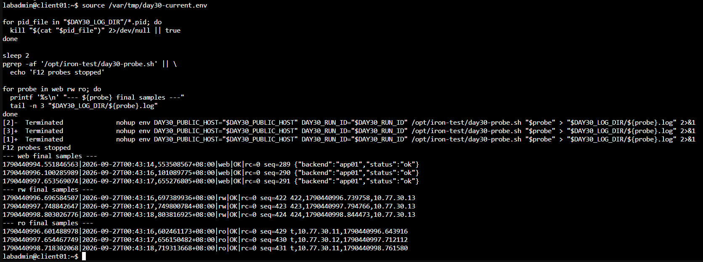
圖（二十一） D02 結束前三條 Probe 持續成功
原始 D02 已完成服務恢復、交易核對與舊 Primary 回歸，後續以相同故障類型補測 InstanceDown 的完整告警生命週期。補測對象為當時的 Primary pg03，不重複計算服務 RTO 或交易缺口。
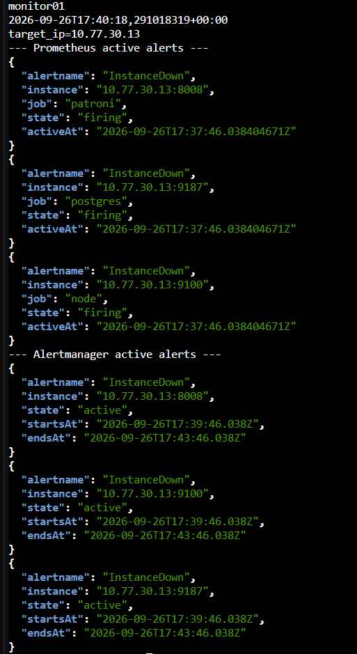
圖（二十二） pg03 三個 InstanceDown 告警進入 Firing 並送達 Alertmanager
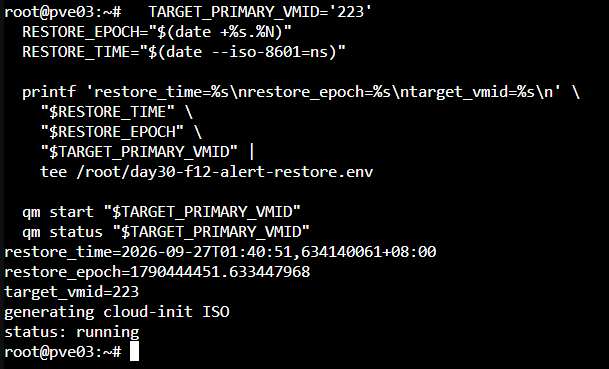
圖（二十三） 重新啟動 pg03 並保存恢復操作時間
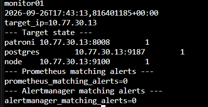
圖（二十四） pg03 三個 Target 回到 Up 且告警清空
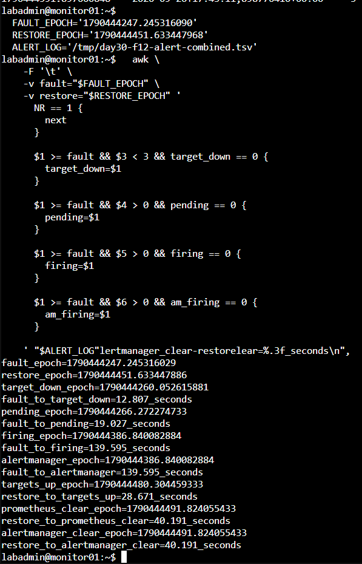
圖（二十五） D02 告警補測生命週期計算結果
Prometheus 規則設有 for: 2m，因此 Pending 到 Firing 約需 120 秒；本次故障注入到 Firing 的 139.595 秒還包含 Prometheus 首次觀察到 Target Down 的時間。重新啟動後，三個 Target 在 28.671 秒全部 Up，告警在 40.191 秒清除。這組補測完成 A03 的 Pending、Firing 與清除證據鏈。
6. A06：同 VLAN 直接 SSH
操作位置：client01。
hostnamectl --static
date --iso-8601=ns
ip route get 10.77.20.31
set +e
nc -vz -w 3 10.77.20.31 22
DIRECT_SSH_RC=$?
printf 'direct_ssh_target=10.77.20.31:22\ndirect_ssh_rc=%s\n' \
"$DIRECT_SSH_RC"
client01 與 app01 同在 VLAN 20，這段流量由第二層直接交換，不經 OPNsense。依目前設定，app01 的主機防火牆只限制監控 Port，TCP 22 仍可達，因此預期 direct_ssh_rc=0。
這個結果只能證明 TCP 22 可達，無法證明 SSH 登入成功。若安全需求是所有 SSH 都必須經過 jump01，本次結果應記為功能 FAIL／已知缺口，改善方式是由 app01 主機防火牆只允許 jump01 來源，再重新執行相同測試。Game Day 保留現況，不在量測途中改規則。
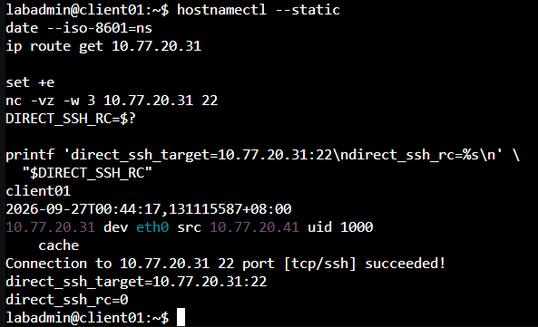
圖（二十六） client01 可在同一 VLAN 直接連到 app01 TCP 22
7. 彙整最終結果
下表依 C4、D2、D3、D4 的原始輸出彙整，Epoch 保留至小數點後六位，秒數沿用量測 Script 的三位小數結果。
| 情境 | 路徑 | 第一筆失敗 Epoch | 穩定恢復 Epoch | 故障到穩定恢復 | 使用者可見中斷 | 資料結果 |
|---|---|---|---|---|---|---|
C03／F10 Proxy VM 突然停止 |
公開 Web | 1790440299.836238 | 1790440305.851748 | 7.265 秒 | 6.016 秒 | 不適用 |
C03／F10 Proxy VM 突然停止 |
DB-RW | 1790440300.674049 | 1790440304.707686 | 6.121 秒 | 4.034 秒 | Probe 持續完成交易 |
C03／F10 Proxy VM 突然停止 |
DB-RO | 1790440300.169436 | 1790440304.203537 | 5.617 秒 | 4.034 秒 | 不適用 |
D02／F11 Primary VM 突然停止 |
公開 Web | 未觀察到失敗 | 未觀察到中斷 | 無法換算 | 無法換算 | 不適用 |
D02／F11 Primary VM 突然停止 |
DB-RW | 1790440612.297455 | 1790440650.275792 | 40.100 秒 | 37.978 秒 | 已確認交易缺口：0／281 |
D02／F11 Primary VM 突然停止 |
DB-RO | 未觀察到失敗 | 未觀察到中斷 | 無法換算 | 無法換算 | 查詢由存活 Replica 承接 |
再填寫完整穩態與告警：
| 情境 | 控制面接手 | 完整穩態 | Firing | Resolved | 功能判讀 | RTO／RPO 判讀 |
|---|---|---|---|---|---|---|
C03／F10 |
proxy02 接手三組 VIP | proxy01 回歸、VIP 維持唯一 | InstanceDown 已觸發 |
恢復後告警清除 | PASS | 以三條 Probe 的實測值建立 RTC 基線；RPC 不適用 |
D02／F11 |
pg03 晉升為新 Leader | 舊 Primary 回歸，服務元件與告警均恢復 | 補測中故障後 139.595 秒 | 補測中重新啟動後 40.191 秒 | PASS | DB-RW RTC 為 40.100 秒；本次 RPC 為零筆已確認交易缺口 |
安全邊界結果另外保存：
| 情境 | 正向路徑 | 負向路徑 | 控制點證據 | 功能判讀 |
|---|---|---|---|---|
A06／F12 同 VLAN SSH |
ProxyJump 既有正向證據 | client01 直連 app01 TCP 22 | client01 Route／TCP 結果 | FAIL，確認目前管理入口缺口 |
判讀規則：
result=no_observed_interruption：本次取樣沒有觀察到失敗，保留樣本數與探測間隔。result=insufficient_recovery_evidence：失敗後尚未取得連續三次成功，需要延長觀察或處理故障。missing_acknowledged_rows=0：本次未觀察到已確認交易遺失。- 有核准目標：用實際觀察值判讀 PASS／FAIL。
- 沒有核准目標：將數值列為能力基線。
取得所有原始證據後，將表格直接填入本文件，不需要把 Markdown 表格另外截成圖片。空白欄位、未執行項目與證據不足都照實保留。
8. 結束檢查
在正式 Runbook 的「結束與回復」逐層確認 PVE／Ceph、etcd／Patroni、Proxy、App、Backup、Monitoring 與公開服務。最後在 client01 確認沒有殘留 Probe：
pgrep -af '/opt/iron-test/day30-probe.sh' || \
echo 'all Day 30 probes stopped'
find /var/log/iron-test \
-maxdepth 2 \
-type f \
-name '*.log' \
-printf '%TY-%Tm-%Td %TH:%TM:%TS %p\n' | \
sort
依演練證據保存政策保留 Script、原始 Log、故障時間與彙整表。測試資料表可以留下供下一次 Game Day 使用；每次以新的 run_id 隔離資料，不需為了複測重新建表。